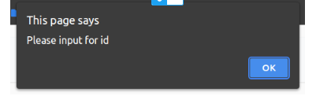
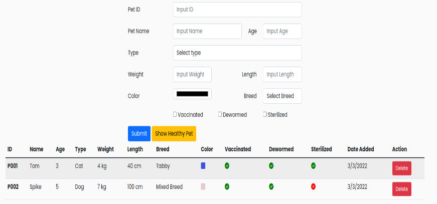
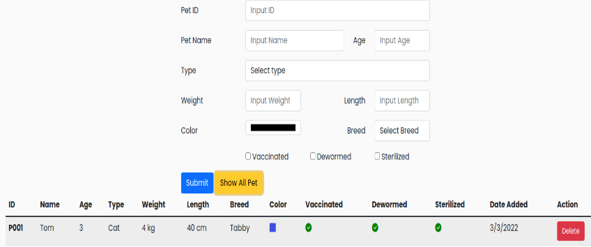

Ứng dụng sẽ bao gồm một Form để người dùng nhập liệu các thông tin cho thú cưng:
- ID: Đây là ID cho mỗi thú cưng, phải khác biệt với nhau
- Name: Tên gọi của thú cưng
- Age: Tuổi của thú cưng
- Type: Loại thú cưng (Chó hoặc Mèo)
- Weight: Cân nặng của thú cưng
-
Height: Chiều dài của thú cưng
- Color: Màu sắc của thú cưng
- Breed: Loại giống
- Vaccinated: Thú cưng đã được tiêm phòng chưa
- Dewormed:: Thú cưng đã được tẩy giun chưa
- Sterilized:: Thú cưng đã được triệt sản chưa
Người dùng cần nhập đầy đủ các thông tin trên để có thể thêm một thú cưng mới lên hệ thống. Đồng thời, ứng dụng cũng sẽ có một số chức năng khác như:Xóa thú cưng và Lọc các thú cưng được đánh giá là khỏe mạnh
Gợi ý
Cần hoàn thành các bước như sau
- Bắt sự kiện Click vào nút "Submit"
- Lấy dữ liệu từ các Form Input
- Validate dữ liệu
- Thêm thú cưng vào danh sách
- Hiển thị danh sách thú cưng
- Xóa các dữ liệu nhập trong Form Input
1. Bắt sự kiện Click vào nút "Submit"
Đầu tiên bạn cần lấy ra các DOM Element mình cần sử dụng, bạn có thể xem lại file HTML để truy xuất theo đúng ID hoặc Class thông qua hàm document.getElementById() hoặc document.querySelector().
Trong file html có sẵn 2 hàng dữ liệu ví dụ, sau khi tham khảo thì hãy xóa 2 hàng đó khỏi file html.
Gợi ý: Sử dụng document.getElementById hoặc document.querySelector để lấy ra Dom element
const submitBtn = document.getElementById("submit-btn");
const idInput = document.getElementById("input-id");
const nameInput = document.getElementById("input-name");
const ageInput = document.getElementById("input-age");
const typeInput = document.getElementById("input-type");
const weightInput = document.getElementById("input-weight");
const lengthInput = document.getElementById("input-length");
const colorInput = document.getElementById("input-color-1");
const breedInput = document.getElementById("input-breed");
const vaccinatedInput = document.getElementById("input-vaccinated");
const dewormedInput = document.getElementById("input-dewormed");
const sterilizedInput = document.getElementById("input-sterilized");
Tiếp theo, người dùng sẽ nhập liệu thông qua Form ở giao diện, sau đó nhấn vào nút "Submit" thì sẽ thêm được một thú cưng với với các thông tin vừa được nhập. Để làm được bước này, bạn sẽ cần xử lý được sự kiện khi mà người dùng nhấn vào nút "Submit".
submitBtn.addEventListener('click', function (e) { ... });
2. Lấy được dữ liệu từ các Input Form
Bước tiếp theo, bạn cần lấy dữ liệu nhập vào từ người dùng, bạn có thể sử dụng một số thuộc tính như value của text, number input hoặc checked của checkbox. Sau đó, gán tất cả vào một Object.
const data = { id: idInput.value, age: parseInt(ageInput.value), color: colorInput.value, breed: breedInput.value, vaccinated: vaccinatedInput.checked, date: new Date(), ... }
Lưu ý: Bạn cần hoàn thành tiếp đoạn code trên để lấy các trường dữ liệu còn lại.
3. Validate dữ liệu hợp lệ
Sẽ có những trường hợp người dùng nhập thiếu dữ liệu hoặc nhập dữ liệu không hợp lệ. Bạn sẽ cần validate theo các yêu cầu như sau:
- Không có trường nào bị nhập thiếu dữ liệu.
- Giá trị ID không được trùng với các thú cưng còn lại. Nếu không hợp lệ, hãy đưa ra thông báo "ID must be unique!".
- Trường Age chỉ được nhập giá trị trong khoảng 1 đến 15. Nếu không hợp lệ, hãy đưa ra thông báo "Age must be between 1 and 15!".
- Trường Weight chỉ được nhập giá trị trong khoảng 1 đến 15. Nếu không hợp lệ, hãy đưa ra thông báo "Weight must be between 1 and 15!".
- Trường Length chỉ được nhập giá trị trong khoảng 1 đến 100. Nếu không hợp lệ, hãy đưa ra thông báo "Length must be between 1 and 100!".
- Bắt buộc phải chọn giá trị cho trường Type. Nếu không hợp lệ, hãy đưa ra thông báo "Please select Type!".
- Bắt buộc phải chọn giá trị cho trường Breed. Nếu không hợp lệ, hãy đưa ra thông báo "Please select Breed!".
Bạn có thể sử dụng hàm alert() để đưa ra thông báo cho người dùng.
4. Thêm thú cưng vào danh sách
Tạo một biến global tên là petArr là một mảng lưu danh sách thú cưng.
const petArr = [];
Sau khi qua bước validate, nếu không gặp lỗi gì thì sẽ thêm thú cưng vào mảng petArr.
const validate = validateData(data)
if (validate) {
petArr.push(data)
clearInput()
renderTableData(petArr)
}
Ngược lại, nếu có lỗi thì bạn sẽ hiển thị lỗi đó ra cho người dùng.
5. Hiển thị danh sách thú cưng
Tiếp theo bạn sẽ thực hiện thao tác để đưa dữ liệu của mảng để hiển thị ra giao diện cho người dùng. Để làm được thao tác này, bạn cần tạo một hàm gọi là renderTableData.
function renderTableData(petArr) { }
Hàm này sẽ nhận vào một tham số là petArr, đây chính là mảng chứa dữ liệu về các thú cưng của chúng ta. Sau đó hàm này sẽ xóa toàn bộ nội dung của bảng, và tiến hành tạo các hàng mới tương ứng với từng thú cưng.
Sau đó, bạn cần duyệt qua các phần tử trong petArr, tạo các hàng tương ứng và thêm vào bảng với cú pháp như sau:
const row = document.createElement('tr')
row.innerHTML = '<HTML code>'
tableBodyEl.appendChild(row)
Bạn chỉ cần truyền vào đoạn HTML cho thẻ tr tương ứng với dữ liệu cho thú cưng tương ứng. Để tạo HTML Code dễ hơn, bạn có thể sử dụng Template String.
Để xóa nội dung hiện có của bảng, bạn có thể sử dụng câu lệnh sau:
tableBodyEl.innerHTML = ''
6.Xóa các dữ liệu vừa nhập trên Form
Sau khi thêm thú cưng thành công, bạn cần xóa các dữ liệu mà người dùng vừa nhập ở trên Form. Cách đơn giản nhất là bạn sẽ đặt lại giá trị cho các thẻ input về rỗng hoặc ''.
const clearInput = () => { idInput.value = '' typeInput.value = 'Select type' vaccinatedInput.checked = false ... }
Lưu ý: Bạn cần hoàn thành tiếp đoạn code trên để xóa dữ liệu cho các Input còn lại.
7. Xóa một thú cưng
Như bạn có thể thấy, chúng ta sẽ có một nút để xóa thú cưng tương ứng đi. Ở bước này, bạn sẽ viết đoạn code để hoàn thành thao tác đó. Trước khi xóa, bạn cần xác nhận với người dùng xem có thực sự muốn xóa không thông qua hàm confirm.
confirm('Are you sure?')
Nếu người dùng đồng ý xóa, bạn sẽ thực hiện tìm kiếm và xóa thú cưng khỏi danh sách, sau đó reload lại bảng bằng cách gọi lại hàm renderTableData. Bạn có thể sử dụng hàm splice và findIndex để thực hiện thao tác này.
Hàm deletePet sẽ nhận vào ID của thú cưng muốn xóa. Sau đó bạn chỉ cần loại dữ liệu có id tương ứng ra khỏi mảng petArr và hiển thị lại trên giao diện.
const deletePet = (petId) => { // Confirm before deletePet if (confirm('Are you sure?')) { ... } }
Để thêm petId vào hàm deletePet, bạn có thể truyền thực tiếp thông qua thuộc tính onClick của nút "Delete", ví dụ như sau:
<td> <button class="btn btn-danger" onclick="deletePet('${ pet.id }')">Delete</button> </td>
8. Hiển thị các thú cưng khỏe mạnh
Ngoài ra, ứng dụng cũng sẽ có chức năng để lọc ra những thú cưng khỏe mạnh. Tiêu chí để biết một thú cưng khỏe mạnh là đảm bảo đã được Tiêm phòng, Tẩy giun và Triệt sản. Ví dụ nếu bạn có dữ liệu ban đầu như sau:
Khi nhấn "Show Healthy Pet" thì sẽ chỉ còn các thú cưng đảm bảo tiêu chí được hiển thị, đồng thời nút bấm cũng sẽ thay đổi thành "Show All Pet".
Khi nhấn lại vào nút "Show All Pet" thì sẽ hiển thị lại toàn bộ các thú cưng đang có và nút bấm sẽ đổi lại thành "Show Healthy Pet" .
Để hoàn thành được chức năng này, bạn sẽ cần tạo một biến dùng để kiểm tra xem hiện tại đang hiển thị tất cả thú cưng hay là chỉ thú cưng khỏe mạnh.
let healthyCheck = false
Nếu như biến này là false thì là hiển thị toàn bộ thú cưng, ngược lại nếu là true thì sẽ chỉ hiển thị thú cưng khỏe mạnh. Khi nhấn vào nút, bạn sẽ dựa theo giá trị của biến này để thực hiện các thao tác liên quan.
Gợi ý các bước thực hiện:
- Tạo một biến healthyPetArr dưới dạng mảng lưu danh sách thú cưng là Healthy Pet.
- Bắt sự kiện click vào Show All Pet/Show Healthy Pet.
- Xử lý sự kiện để thay đổi button và biến healthyCheck.
- Gán lại mảng healthyPetArr sử dụng hàm filter JS nếu healthyCheck = true.
- Gọi hàm renderTableData với input là petArr nếu healthyCheck = false hoặc input là healthyPetArr nếu healthyCheck = true.